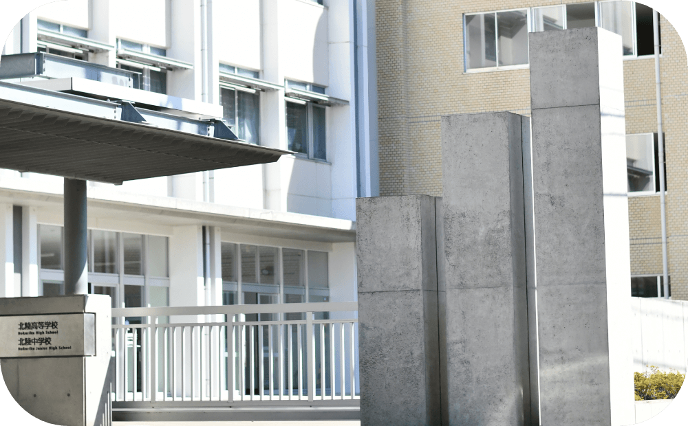
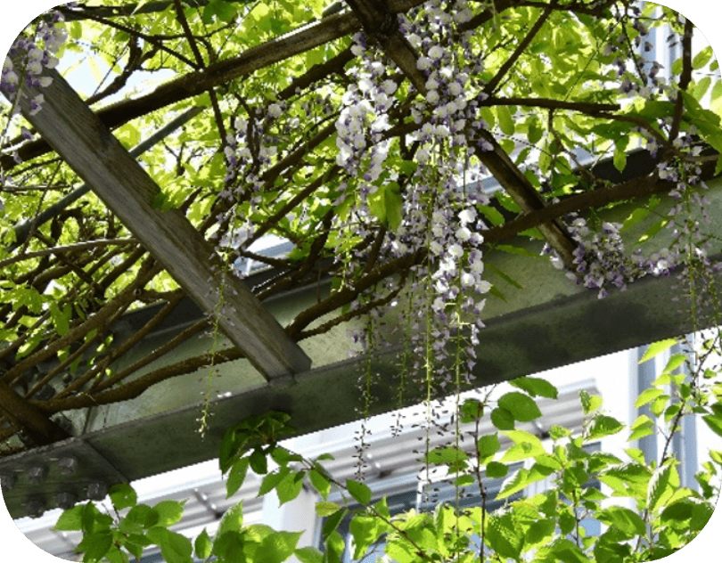
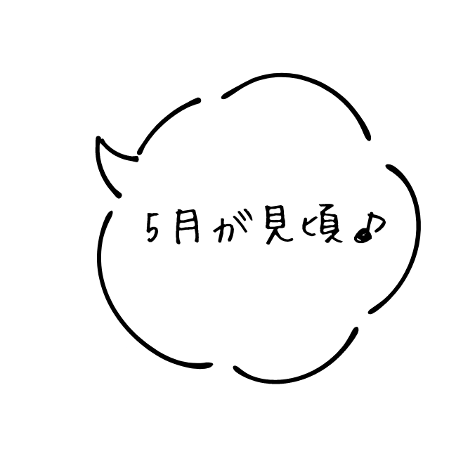
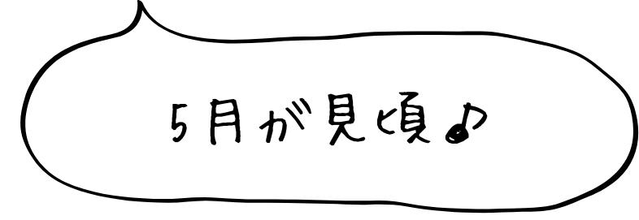
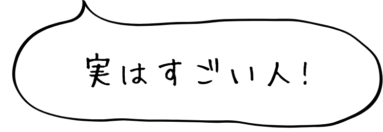

trivia
学園の歴史や建学の精神に関連している、
北陸学園のトリビアをご紹介。
毎⽇通っていても、
知らなかったことばかり！
学園の歴史や建学の精神に関連している、
北陸学園のトリビアをご紹介。
毎⽇通っていても、
知らなかったことばかり！
過去に使われてきたさまざまなデザイン
上段左 旧制北陸中学校の帽章 上段中 新制北陸高校の帽章（昭和30年代）
下段左 昭和50年代に広く使われたマーク
現在の校章
北陸高校・北陸中学校の校章は、桐の花と葉がデザイン化された「桐紋」です。花の部分が真ん中に５つ、左右に３つであることから「五三の桐」と呼ばれます。「桐紋」はもともと皇室専用の紋章で、現在でも内閣総理大臣の紋章や500円玉のデザインに使われていて、日本を象徴する紋章の一つです。
では、どうしてそれが本校の校章に？ 北陸学園の歴史の中で、この「五三の桐」が登場する最古の記録は大正5年(1916年)のものですが、いつから、どうして使われるようになったのかは、実は記録がありません。京都の本願寺で「五七の桐」が使われているので、これに由来すると考えるのが筋だと思いますが、ではどうして皇室の紋章が本願寺で使われているのでしょう？調べてみると、面白い秘密が色々と出てきそうですよ！
旧制北陸中学校校旗
トレセン外壁に三本線
門柱の三本線
セーラー服の襟に三本線
学年ごとでカラーが異なる体操服も、三本線
女子制服、男女体操服、トレセンの外壁、生徒玄関の門柱…などなど、いろんなところで三本線のデザインを目にすることができます。北陸学園の歴史の中で、「三本線」が登場するのは大正9年(1920)。この年、学生帽に白線三条がつけられ、さらに新校歌が制定されました（現在の歌詞はこの時から）。４番まであった校歌が今では３番までになり、歌われなくなった旧３番の中に、以下の歌詞があります。
「五三の桐に中の文字 徽章に連なる白線の 三はすなはち智仁勇」
「中の文字」とは当時の校名が北陸中学校だったので、校章に中の文字がありました。徽章は学生帽の真ん中にあった校章。「白線の三はすなはち智仁勇」というところに三本線の意味が込められています。ただし「智仁勇」とは江戸時代から戦前まで色濃くあった儒教の価値観。本校の建学の精神に照らせば、三本線の意味は「仏法僧」と考えるのが筋でしょう。「ブッダーン、サラナン、ガッチャーミ（自ら仏に帰依し奉る」で始まる「三帰依」の精神ですね。
「下がり藤」紋
プロムナードの藤棚
  毎日登下校の際に通るプロムナードの上には藤棚があり、毎年4月下旬から５月にかけて美しい花が咲き誇ります。
本校の建学の精神を象徴して平成25年（2013）に整備されました。藤園学園（龍谷富山高校）、藤花学園（金沢龍谷高校）など龍谷総合学園の関係学校にはその名に藤が含まれているところがありますし、北海道龍谷学園（小樽双葉高校）や大阪・相愛学園（相愛高校）のように校章に藤の花がデザインされているところもあります。
これは、本願寺の「寺紋」が「下がり藤」であることに由来します。本願寺の「下り藤」は「九条藤」と言われるものと同じで、本願寺と公家である九条家とのつながりをうかがい知ることができます。
昭和25年（1950）、当時の生徒たちが募金を集め、開学70周年の記念碑を建立しました。
この時の生徒たちの思いがわかるでしょうか。昭和20年の福井空襲で本校はすべての校舎を失い、昭和23年の学制改革で再スタートしようとした矢先に、九頭竜川堤防が決壊し水害に見舞われました。さらに昭和25年にはジェーン台風で校舎全体が水浸しになり…。今からは想像もできないほど次から次へと学校存亡の危機に立たされる中での、記念碑建立だったわけです。先人の偉業に思いを馳せ、未来に希望を夢見るのは、70周年も140周年も一緒ですね。
今、この70周年記念碑はグラウンド北側の国旗掲揚ポールの横にひっそりと立って、体育の授業や野球部の練習の様子を見守っています。
雪が降った寒い日に、誰かがマフラーをかけてくれました。いいね！
来客玄関を入ったところにある銅像。気にはなりながらも、誰だろうと思っていましたか？この方は鷲山 教悟（わしやま きょうご）先生とおっしゃる元校長先生です。「なーんだ、昔の校長先生か」と思った人、ちょっと待った！鷲山先生のご経歴を見て下さい。
【鷲山先生のご経歴と業績】
大正 8年 北陸中学校卒業
昭和18年 北陸中学校校長就任
昭和50年 北陸高等学校校長退任
校長在任期間は、なんと31年余！戦争中は空襲による全校舎焼失、戦後はバラック校舎による再建、学制改革による新制北陸高校の立ち上げ、福井大震災による全校舎倒壊、そして水害と、数々の試練を不屈の精神で乗り越え、男女共学化を成し遂げ、実に６棟の鉄筋校舎・体育館を新築し、県下最大の高等学校へと成長させた、ものすごい校長先生です。しかも本校卒業ということは在校生にとっては大先輩！
生徒の皆さん、今度鷲山先生の前を通った時は、きちんとご挨拶して下さいね。